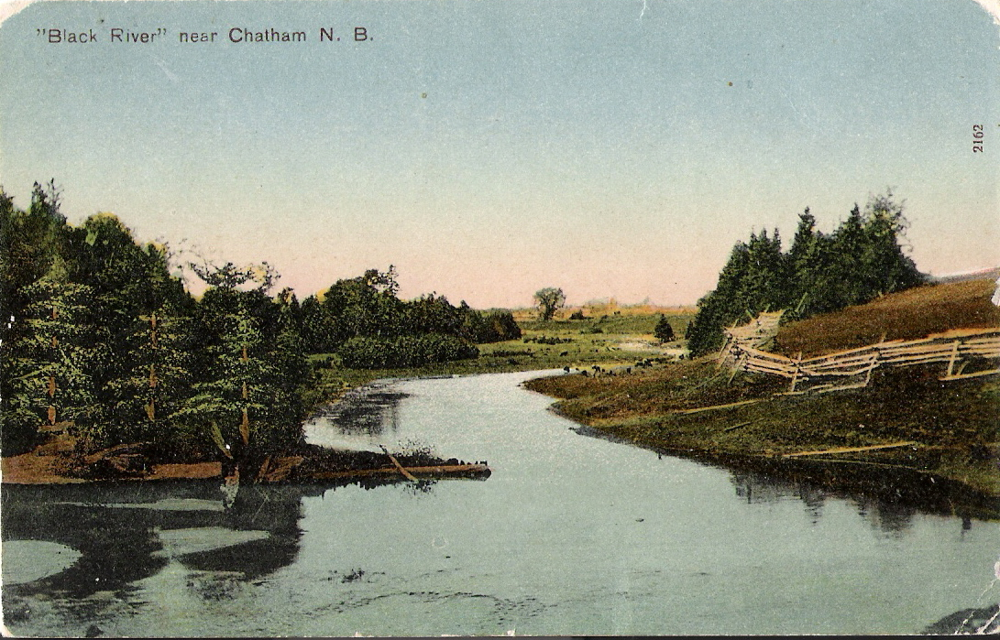

The Family Chronicle
No. 170 March 6, 2009
____________________________________________________________________

Recognize this view of Black River??
Barry Mackenzie, “a collector of local postcards, and this one was generously given to me by Joan Menzies of Miramichi from her own collection…“wonders if readers know where this was taken? Barry also wonders if readers know of other Black River postcards of yesteryear. If you have one, send me a copy and I will publish it in a future Chronicle.
Haywire and binder twine
In a recent issue of the Chronicle, I noted the price of binder twin as 90 cents a ball in 1942 with a ball being a bit larger than a 1kg coffee can but, of course, much heavier.
Early settlers cut grain with scythe and sickle; a major breakthrough occurred in 1831 with the invention of the McCormick reaper in Virginia. The advent of the binder forty years later resulted in grain being cut and bundled then dropped on the ground. The twine used in the binder became known as binder twine. Early binder twine was made of sisal, a natural product, which was biodegradable. The combine replaced the binder and threshes the grain as it harvests; binder twine is not needed.
The advent of the hay baler, however, provided a new need for twine, baler twine, much of which is synthetic. Baler twine is, I believe, much heavier than binder twine.
A quick search of the internet also tells me:
‘Haywire is a compound of the words hay and wire, originally simply denoting wire used to bale hay or straw. The term is first recorded as a noun in a debate in the Canadian House of Commons (1917), so it is a Canadianism or, since it appeared soon thereafter in a U.S. publication, a North Americanism. We find an earlier (1905) attributive use in the phrase hay wire outfit, a term used contemptuously for poorly equipped loggers. What lies behind this term is the practice of making repairs with haywire. Haywire is found in other contexts with the general sense "makeshift, inefficient," from which come the extended senses "not functioning properly" and "crazy
Tabusintac Hill
Although Tabusintac is on the north shore of the Miramichi, because the river runs roughly east and west, the Tabusintac Hill is on Route 11 between Chatham and Bathurst. Given my Dad’s roots were in the Bathurst area, we frequently traveled that road and the hill was well known to our family. Two other hills along the road were the Big Eskedellick and the Little Eskedellick; according to my NB book of place names, the proper spelling is Eskedelloc. While checking information recently, I’ve come to the conclusion that the Little Eskedelloc was really the south Tabusintac Hill. But the important thing is not the name.
The Tabusintac Hill was certainly the biggest hill in the area - as I recall, it had seven turns. Driving it today one is not aware of the depth of the valley. In addition, early cars were quite different from those of today. Stories abound, at least in our household, and I believe there to be some truth in all of them:
Sometimes drivers turned their cars and backed up the hill. Two reasons were given; (1) Gasoline was gravity fed from a tank just ahead of the windshield and the design of some tanks meant that the flow of gasoline was better when backing up the hill. (2) The ratio of reverse gears in some old cars meant that the car had more power backing up than it did moving forward.
Radiators on early cars often overheated and the water evaporated. Brother Ken tells the story of having to walk to the bottom of the hill to fill a can of water for the radiator of the old Model A. The heat from the engine labouring up the hill caused some of the water in the radiator to evaporate.
My father always made a trip to his old home, Canobie, late every fall and each time he returned with a supply of “green “codfish for the winter. (Green was not the colour but meant that the cod had simply been cleaned and salted) On one trip, he went on a buying spree and brought home two horses in a trailer behind the Model A, a half ton of green cod on the rear luggage rack and two geese in a makeshift cage in the back seat. While in Canobie, there was a snowfall and the roads became icy; on his return, half way up the south side of the Tabusintac hill, the tires began to spin on the snow and ice. While Walter, who was driving, held his foot on the brakes, Dad wrapped a logging chain around each wheel. They managed to get home safely but it was a harrowing experience, to say the least.
The Family Chronicle (Copyright) is an occasional newsletter published by Don Glendenning and posted on the family website. It is intended to share information about my family, community and the times in which I grew up. While every effort is made to be accurate, errors are likely to occur. Comments, enquiries and information may be sent to 62 Queen Elizabeth Drive, Charlottetown, PEI, C1A 3A9. Tel: 902 892 5859. Email: don@glendenning.net Web: www.glendenning.net/don